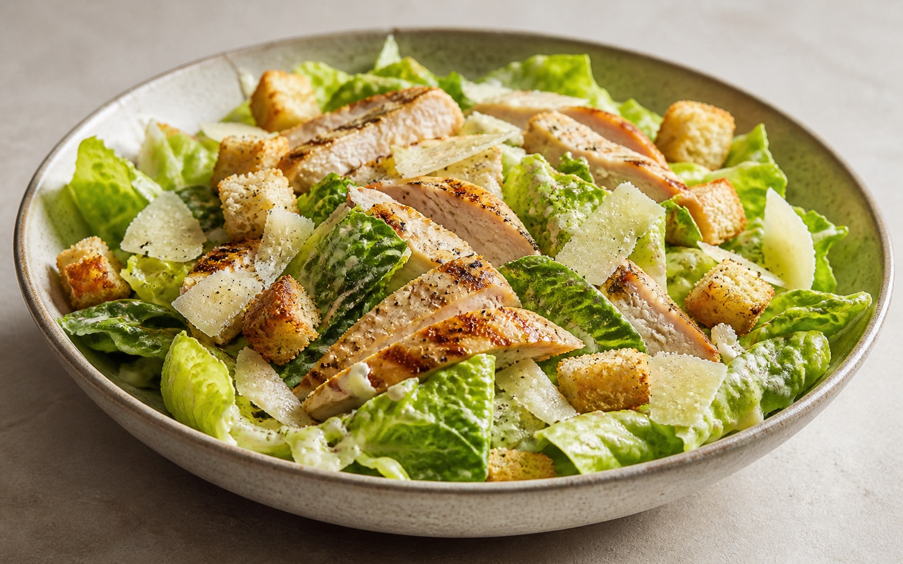

Salade César au poulet grillé et croûtons

Cette version pour deux personnes associe du poulet chaud ou tiède, une romaine bien sèche et des croûtons ajoutés au service. La sauce est préparée à part : versez-en progressivement, sans chercher à utiliser toute la quantité. Prévoyez environ 40 minutes, avec une partie de la préparation pendant la cuisson et les 5 minutes de repos du poulet.
Trois préparations, un montage au service
| Élément | Préparer séparément | Au service |
|---|---|---|
| Poulet | Cuisson à cœur puis repos sur une planche propre. | Trancher après les 5 minutes de repos. |
| Sauce | 150 ml d’huile pour l’émulsion, 40 g de parmesan râpé. | Ajouter progressivement, sans imposer toute la quantité. |
| Croûtons et fromage | Une cuillerée d’huile pour le pain ; 40 g de parmesan en copeaux. | Ajouter après avoir enrobé la salade de sauce. |
Si la sauce est trop épaisse, l’eau froide prévue permet de la détendre. Si elle se sépare, n’ajoutez pas d’huile d’un coup : reprenez le fouettage en incorporant le mélange très progressivement dans un bol propre avec un peu de l’eau prévue.
Cette révision clarifie la préparation ; elle ne constitue pas un essai en cuisine documenté.
Ingrédients
- 2 pièces blancs de poulet de 180 g chacun
- 1 pièce salade romaine
- 80 g parmesan : 40 g à râper pour la sauce et 40 g en copeaux pour servir
- 100 g pain de campagne rassis pour les croûtons
- 2 pièces jaunes d’œufs extra-frais pour la sauce
- 4 pièces filets d’anchois à l’huile, égouttés
- 2 gousses ail : une pour les croûtons, une pour la sauce
- 1 cuillère à soupe moutarde de Dijon
- 2 cuillères à soupe jus de citron
- 150 ml huile d’olive pour la sauce
- 1 cuillère à soupe huile d’olive pour les croûtons
- 3 cuillères à soupe huile de tournesol pour la cuisson du poulet
- 1 cuillère à soupe eau froide, si nécessaire pour détendre la sauce
- Selon besoin sel fin et poivre noir
Préparation
Uniformisez légèrement l’épaisseur des blancs. Salez et poivrez. Chauffez l’huile de tournesol dans une poêle, puis faites dorer le poulet environ 5 à 6 minutes par face. Si la surface colore trop vite, baissez le feu. Contrôlez 74 °C au centre de la partie la plus épaisse avec un thermomètre alimentaire ; prolongez à feu modéré si nécessaire. La durée et la coloration seules ne suffisent pas.
Posez le poulet cuit sur une planche propre et laissez-le reposer 5 minutes, couvert sans serrer. Lavez les mains, la planche et les ustensiles ayant touché la viande crue avant de manipuler salade, sauce ou viande cuite. Tranchez le poulet après ce repos.
Coupez le pain en cubes d’environ 1 cm. Chauffez la cuillère à soupe d’huile d’olive réservée aux croûtons avec une gousse d’ail écrasée dans une autre poêle. Ajoutez le pain et remuez 4 à 5 minutes, jusqu’à ce qu’il soit doré. Retirez l’ail s’il brunit et réservez les croûtons sans les couvrir pour ne pas les ramollir.
Écrasez les anchois et la seconde gousse d’ail dans un bol. Incorporez les jaunes, la moutarde et le jus de citron. Fouettez en ajoutant les 150 ml d’huile d’olive destinés à la sauce : quelques gouttes d’abord, puis un mince filet lorsque le mélange épaissit. Si vous choisissez une sauce prête à l’emploi sans jaunes crus, ne réalisez pas cette étape ni la suivante.
Râpez 40 g de parmesan et incorporez-les à la sauce. Si elle est trop épaisse pour enrober les feuilles, ajoutez l’eau froide petit à petit, sans verser nécessairement toute la cuillère. Goûtez avant de saler : anchois, moutarde et fromage en apportent déjà. Gardez la sauce au réfrigérateur jusqu’au dressage.
Lavez les feuilles, essorez-les soigneusement et coupez-les en morceaux faciles à manger. Une salade encore mouillée dilue la sauce. Préparez les 40 g de parmesan restants en copeaux et utilisez un saladier propre et sec.
Enrobez la romaine avec quelques cuillerées de sauce, puis ajustez selon votre goût. Répartissez le poulet, les croûtons et les copeaux de parmesan sur les assiettes. Servez aussitôt, avec le reste de sauce à part. Ne versez pas automatiquement toute la sauce sur les deux portions.
Conseils et astuces
- La sauce de base contient des jaunes crus. Elle est déconseillée aux femmes enceintes, jeunes enfants, personnes âgées ou immunodéprimées ; l’alternative ci-dessous remplace la sauce entière.
- Consommez la sauce immédiatement ou placez-la rapidement au réfrigérateur à 4 °C maximum, dans un récipient fermé, pour la consommer dans les 24 heures.
- Pour organiser la préparation, faites les croûtons et la sauce pendant la cuisson ou le repos du poulet, seulement après avoir nettoyé les ustensiles ayant touché la viande crue.
Sources des précautions
Relecture documentaire du 28 octobre 2026 : cuisson des volailles à cœur (FoodSafety.gov) et préparations aux œufs crus (Anses). Ces références concernent les précautions sanitaires ; elles ne valident pas les proportions de notre sauce.
Questions fréquentes
Comment éviter un poulet sec sans le servir insuffisamment cuit ?
Uniformisez son épaisseur, contrôlez 74 °C à cœur et baissez le feu si la surface brunit avant que le centre soit cuit. Laissez ensuite reposer 5 minutes sur une planche propre. Le nombre de minutes dépend de l’épaisseur et de la poêle.
Comment éviter les jaunes crus dans la sauce ?
Remplacez toute la sauce maison par une sauce César prête à l’emploi sans œufs crus non pasteurisés, en vérifiant son étiquette et ses consignes de conservation. N’ajoutez alors ni les deux jaunes ni les 150 ml d’huile de la sauce maison. Dosez progressivement au service : ce n’est pas une substitution des jaunes par deux cuillerées de mayonnaise.
Que préparer en avance ?
Gardez la salade lavée et essorée, la sauce et le poulet cuit séparés au réfrigérateur ; les croûtons restent séparés et au sec. Consommez la sauce aux jaunes crus immédiatement ou refroidissez-la rapidement et consommez-la dans les 24 heures. Assemblez seulement au service.